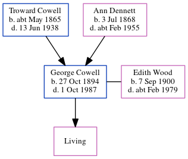

George James Cowell 1894 - 1987
[ Home ] | [ Calendar ] | [ Surnames Index ] | [ Census Index ] | [ Family History ]The child of Troward Cowell and Ann Dennett, George Cowell, the first cousin twice-removed on the mother's side of Nigel Horne, was born in Northwood, Kent, England on Oct 27, 18941,2,3,4,5,6, was baptized in St Lawrence, Thanet, Kent, England on Mar 3, 1895. He married Edith Wood (with whom he had 1 surviving child, Annie Edith) in Thanet, Kent, England around Nov 19287 (Oct/Nov/Dec). Like his father, he was a horseman.
During his life, he was living at Gore End Farm, Birchington, Kent on Mar 31, 19018; at The Elms, Sarre, Kent on Apr 2, 19112; at Granville House, Acol, Kent on Jun 19, 19219; and at Acol Hill Farm, Shottendane Road, Birchington, Kent on Sep 29, 19393. In 1921 he was working at Charles Willett Farmer in Acol Farm, Kent. Georgeappeared in a newspaper on 30 Sep 1988 (https://www.findmypast.com/image-viewer?issue=BL/0004721/19880930&page=0002&article=002&stringtohighlight=george%20cowell).
He died on Oct 1, 1987 in Thanet4,5.
Parents
- Troward was born c. May 1865
- Ann was born on Jul 3, 1868
Citations
- 1901 England Census Online publication - Provo, UT, USA: The Generations Network, Inc., 2005.Original data - Census Returns of England and Wales, 1901. Kew, Surrey, England: The National Archives of the UK (TNA): Public Record Office (PRO), 1901. Data imaged from the National
- 1911 Census for England & Wales - Findmypast (was age 16 and a servant in the household)
- 1939 Register - Findmypast (was the head of the household)
- England & Wales deaths 1837-2007 - Findmypast
- England & Wales, Death Index: 1984-2005 Online publication - Provo, UT, USA: The Generations Network, Inc., 2007.Original data - General Register Office. England and Wales Civil Registration Indexes. London, England: General Register Office. © Crown copyright. Published by permission of the Cont
- England & Wales, FreeBMD Birth Index, 1837-1915 Online publication - Provo, UT, USA: The Generations Network, Inc., 2006.Original data - General Register Office. England and Wales Civil Registration Indexes. London, England: General Register Office. © Crown copyright. Published by permission of the Cont
- England & Wales marriages 1837-2008 - Findmypast
- 1901 England, Wales & Scotland Census - Findmypast (was age 6 and the son of the head of the household)
- 1921 Census Of England & Wales - Findmypast (was age 26 and the son of the head of the household)
Media
Thanet Times 13 Oct 1987

1901 England, Wales & Scotland Census Transcription - GBC-1901-0005518440
England & Wales marriages 1837-2008 - BMD/M/1928/4/AZ/000240/005
England & Wales births 1837-2006 - BMD/B/1894/4/AZ/000128/090
England & Wales deaths 1837-2007 - BMD/D/1987/10/76035577
Canterbury Baptisms - GBPRS/CANT/B/96406008
1939 Register Transcription - TNA-R39-1752-1752A-004-01
1939 Register Transcription - TNA-R39-1752-1752A-004-03
1939 Register - TNA/R39/1752/1752A/003/44
England, Births & Baptisms 1538-1975 Transcription - R_885344146
1911 Census For England & Wales - GBC/1911/RG14/04478/0011/6
1921 Census of England & Wales - GBC/1921/RG15/04433/0277/03
Family Tree
Generated by ged2site. Last updated on Jun 11, 2024